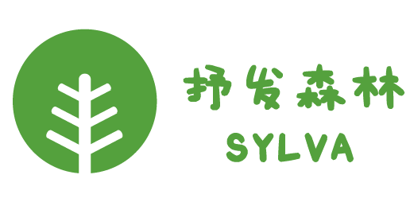

简介
抒发森林（sylva）曾是一款属于当代大学生的匿名社交论坛，用户可以在上面抒发情绪、参与热点讨论、寻求帮助等。作为一个与校园生活相关的平台，抒发森林在一定程度上提供了情感交流和心理支持的空间。然而，由于某些原因，抒发森林于2022年4月底停止运营。同年7月，抒发森林更名为共鸣（Comin），重新上线。不过，令人遗憾的是，Comin并未能继续长久运营，在8月中旬也停止运营。虽然抒发森林和Comin都已停止运营，但它们曾经在校园社交领域发挥了重要的作用，给我们留下了一段珍贵的记忆。
时间线
- 未知：吉大树洞与北大抒发森林团队合作，将吉大树洞数据迁移至树说，后又更名为抒发森林。
- 2022年4月前：抒发森林诞生，并开启内测，仅有少数学校可使用。随着内测逐步完成，抒发森林部分帖子以截图方式被洞友搬运至百度贴吧等平台。
- 2022年4月初：百花齐放，百家争鸣。
- 2022年4月末：4月30日因为抒发森林中出现讨论某学生运动的帖子，treehollow.net被注册局停止了解析服务，访问开始出现异常（network error），部分用户无法访问，后来部分洞友可通过修改host进行正常访问，但好景不长，修改host后也无法访问，给treehollow管理员Alice的邮件也无法正常发送，被退回。Alice的原帖：
hello，大家好！几日不见，非常想念！ 我们目前被注册局停止了解析服务，大家不用慌，已经在申诉了，原因是有人讨论了某些学生运动，网信办给我们出示了举报者上传的截图资料，图片里的时间是三分钟前。 我们一定加强后续的审核建设，保护我们，也保护大家。 - 2022年5月3日 00:36:抒发森林微信公众号发布产品升级公告，公告内容：
产品升级公告 亲爱的各位 dz 们： 为了向各位提供更加优质的产品体验，本团队目前正对 Sylva 抒发森林产品进行功能升级，修复现有漏洞并增设更多产品功能。期间我们将暂停用户的产品登录使用，为您造成的不便，敬请谅解。 产品将于5月9日（周一）更新上线，具体时间以实际为准。届时请各位到应用商店或官网进行更新，完成后即可正常使用。在此再次感谢各位对 Sylva 抒发森林的信任与支持。 抒发森林创业团队 2022年5月2日 - 2022年7月中旬：Comin开始内测。
- 2022年7月21日 14:00：抒发森林公众号推送文章：Comin，打造你的社交圈子，Comin正式上线。
- 2022年8月中旬（时间点可能有误）：Comin再次无法访问。
- 2023年夏，热心洞友的treehollow.club上线，但好景不长，一个月后再次无法访问。
功能和服务
-
抒发森林（sylva）分为两大板块，全国树洞和各大学校树洞，全国树洞面向所有注册用户，用户可以匿名发送普通帖子（可附带图片）、投票贴、回复帖子、收藏帖子。当回复帖子时，第一个回复人昵称为Alice、第二个回复人昵称为Bob……, 有较好的匿名性。各大学校树洞起初全面开放，但由于各大学校树洞过多，难于管理，限制为该学校用户达50人后开放，可像全国树洞一样发帖回帖等。
-
共鸣（Comin）与抒发森林类似，同样可以像抒发森林一样发送普通帖子（可附带图片）、投票贴、回复帖子，但不同的是昵称是由用户自己命名的，而并非随着回复先后而改变。另外一个不同之处是Comin拥有更多的分区，例如：共鸣森林、灵异社、游戏策划、考研交流、感情、闲聊等。
-
注册方式：抒发森林（sylva）和共鸣（Comin）都通过手机号码进行注册，但还需要使用校园邮箱或事上传学生证、校园卡等方式来完成身份认证。